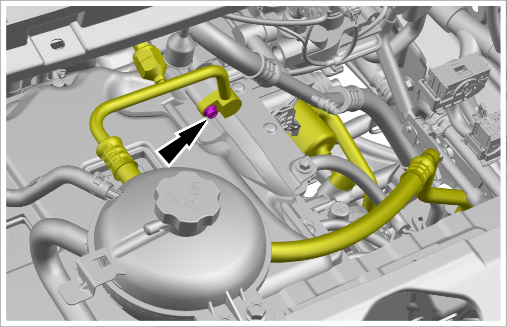
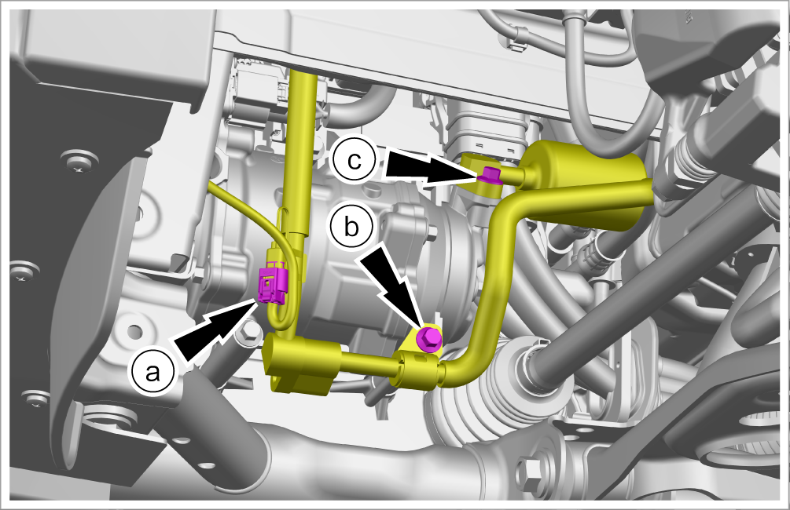
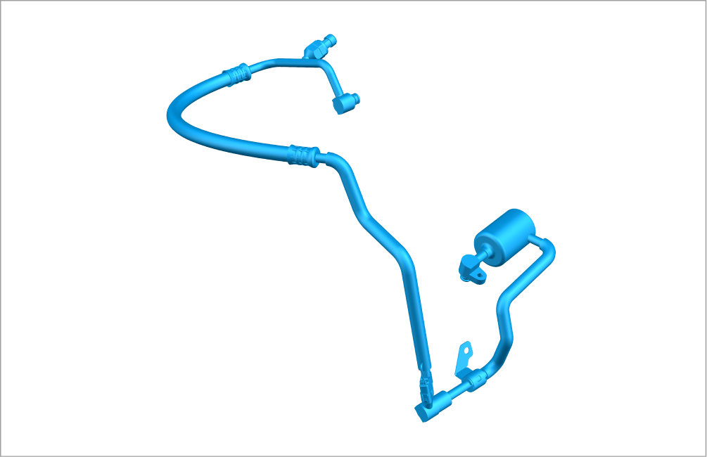

Removal and installation of compressor discharge pipe assembly 1
Removal

After pipelines are connected, seal all pipeline joints as soon as possible to prevent dust, impurities and foreign matters from entering the A/C system and causing system abnormalities.
-
Power off the low-voltage electrical system. Refer to Power-off and power-on of low-voltage electrical system
-
Recycle the refrigerant. Refer to Refrigerant recovery and filling
-
Remove the gas-liquid separator assembly. Refer toRemoval and installation of gas-liquid separator assembly
-
Remove 1 fixing bolt, and detach the compressor discharge pipe assembly 1 from the compressor discharge pipe assembly 5.
Reminder
Disconnect 1 connector from the compressor discharge pipe assembly 1.

-
Remove the compressor discharge pipe assembly 1.
-
Disconnect 1 connector.
-
Remove 1 fixing bolt.
-
Remove 1 connecting bolt, and detach the compressor discharge pipe assembly 1 from the electric compressor assembly.

-
-
Take out the compressor discharge pipe assembly 1.

Installation
-
Replace O-rings on all pipeline joints with new ones.
-
Before installing a new O-ring, make sure that the pipeline and interface are clean and free of impurities, and apply refrigerant oil evenly on the surface of the O-ring.
-
Install it in the reverse order of removal.
-
Vacuumize the A/C system. Refer toRefrigerant recovery and filling
-
Fill refrigerant. Refer toRefrigerant recovery and filling